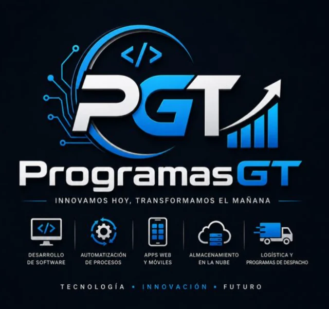

Desarrollo de software a la medida
Sistemas construidos para cómo trabaja tu empresa, no al revés. Facturación, inventarios, control de personal, reportes gerenciales.
- Web
- Escritorio
- API
- Reportería
Innovamos hoy, transformamos el mañana
Desarrollamos aplicaciones web y móviles, automatizamos procesos administrativos y construimos programas de despacho y logística para pequeñas y medianas empresas en Guatemala.

Servicios
Cada proyecto se cotiza según su alcance real. Cuéntanos qué necesitas y te devolvemos una propuesta con precio, tiempos y entregables definidos.
Sistemas construidos para cómo trabaja tu empresa, no al revés. Facturación, inventarios, control de personal, reportes gerenciales.
Desde un sitio corporativo que te dé presencia seria, hasta una plataforma con usuarios, paneles y datos en tiempo real.
Aplicaciones para Android e iOS conectadas a tu sistema: pedidos, cobros en ruta, control de campo, atención al cliente.
Ese Excel que tres personas llenan a mano cada día puede ser un flujo automático. Reducimos el trabajo repetitivo y los errores de digitación.
Tus archivos y tu base de datos accesibles desde cualquier sucursal, con respaldos automáticos y permisos por usuario.
Control de rutas, asignación de pilotos, estados de entrega y comprobantes digitales. Saber dónde está cada pedido sin llamar por teléfono.
Cómo trabajamos
Un proceso de cinco etapas. En cada una sabes qué se entrega y cuánto cuesta antes de avanzar a la siguiente.
Nos sentamos contigo a entender cómo opera tu empresa hoy y dónde se pierde el tiempo. Sin costo.
Documento con alcance, entregables, cronograma, precio y lo que queda fuera. Lo firmas o lo ajustamos.
Prototipo navegable de las pantallas antes de programar. Los cambios aquí cuestan minutos, no semanas.
Construcción por entregas. Cada semana ves una parte funcionando y puedes corregir el rumbo.
Puesta en marcha, capacitación a tu equipo, documentación y código fuente. Soporte según lo acordado.
Tecnología
Herramientas estándar de la industria, no soluciones cerradas que te dejen amarrado a un solo proveedor.
Catálogo
Además del desarrollo a la medida, construimos sistemas propios por área de negocio. Son demostraciones reales: entra, pruébalas y cotiza la versión adaptada a tu empresa.
Gestión de personal para empresas que ya no pueden llevar planillas, permisos y expedientes en hojas de cálculo sueltas. Control de colaboradores, puestos, asistencia y reportes gerenciales desde un solo panel.
Control de rutas, asignación de pilotos, estados de entrega y comprobantes digitales. En preparación para el catálogo; si lo necesitas ahora, lo desarrollamos a la medida.
Para quién trabajamos
Muchos negocios en Guatemala crecen hasta donde su forma de trabajar se los permite. Estos son los momentos en los que normalmente nos buscan.
Cuando esa persona falta o se va, la operación se detiene. Convertimos ese archivo en un sistema con usuarios, permisos y respaldo.
Llamadas al piloto para saber si ya entregó. Un programa de despacho te da el estado de cada entrega en tiempo real y con comprobante.
Sin sitio web, la empresa existe solo para quien ya la conoce. Una presencia digital seria abre la puerta a clientes que hoy se van con la competencia.
Del correo al sistema, del sistema al Excel, del Excel al reporte. Cada copia es una oportunidad de error. Eso se automatiza.
Quiénes somos
ProgramasGT nace de la sociedad entre dos ingenieros en sistemas guatemaltecos con la intención de darle a las pequeñas empresas del país el mismo nivel de tecnología que hoy solo alcanzan las grandes.
Dirige el desarrollo de software y la relación con clientes. Responsable de que cada proyecto se entregue con el alcance y en el tiempo acordados.
A cargo de arquitectura, infraestructura en la nube y automatización de procesos. Responsable de que lo que construimos aguante crecer.
Nuestra visión
Empezamos con prototipos y plantillas propias para resolver las necesidades diarias de empresas que, por falta de experiencia técnica, no han podido dar el salto al desarrollo. La meta a largo plazo es abrir espacio a más jóvenes ingenieros del país y llegar a ser un referente en desarrollo de software y aplicaciones en Guatemala.
Esta sección describe metas de la empresa, no resultados alcanzados. ProgramasGT es una empresa de reciente formación.
Cotización
No publicamos precios de lista porque ningún proyecto se parece a otro. Llena el formulario y te devolvemos una propuesta con precio y tiempos dentro de 24 horas hábiles.
Si prefieres explicarlo hablando, escríbenos por WhatsApp y coordinamos una llamada de diagnóstico sin costo.